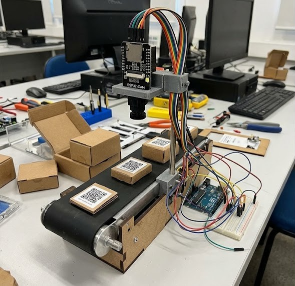
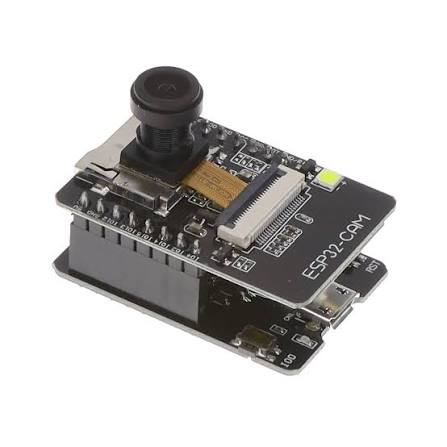
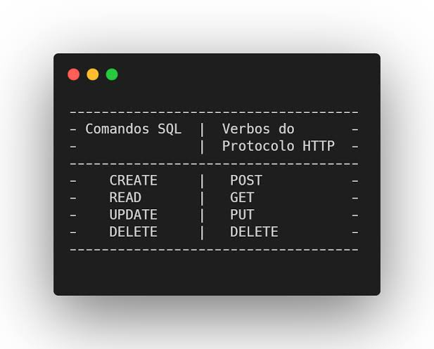

HTML
Organiza a estrutura e o significado do conteúdo da página.
<h1>Meu projeto</h1>Exemplo de página técnica para explicar as tecnologias estudadas e registrar evidências de prática.
Organiza a estrutura e o significado do conteúdo da página.
<h1>Meu projeto</h1>Controla cores, tipografia, espaçamento e layout.
.card { padding: 16px; }Adiciona comportamento e interatividade aos elementos.
botao.addEventListener("click", ...);Desenvolvemos uma esteira automatizada para identificação e rastreamento de itens usando visão computacional e web. Conforme os objetos passam pela esteira, uma câmera ESP32-CAM captura os QR Codes e envia os dados para uma aplicação hospedada na nuvem, onde um script em JavaScript decodifica a leitura, extrai as informações e transmite tudo para uma interface web integrada a um banco de dados para registro em tempo real.


Estrutura a lógica de negócio e sistemas completos com Programação Orientada a Objetos.
public class Sistema { ... }Organiza, consulta e salva dados de forma persistente usando SQLite e Firestore.
SELECT * FROM registros;Sistema CRUD de gerenciamento de usuários desenvolvido em Java puro e integrado ao banco de dados SQLite via JDBC. Projetado para rodar diretamente no terminal (sem interface gráfica), o sistema foca na lógica de back-end e na persistência real dos dados, permitindo cadastrar, consultar, atualizar e excluir registros de usuários com armazenamento local leve e estruturado em SQL.
